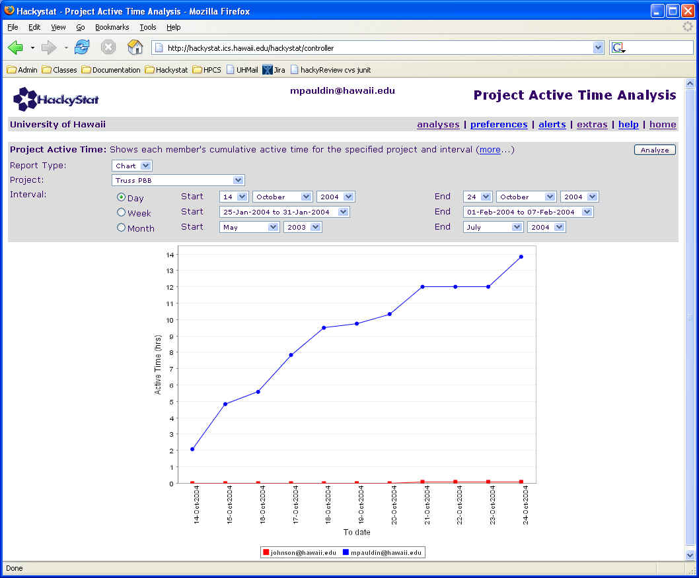
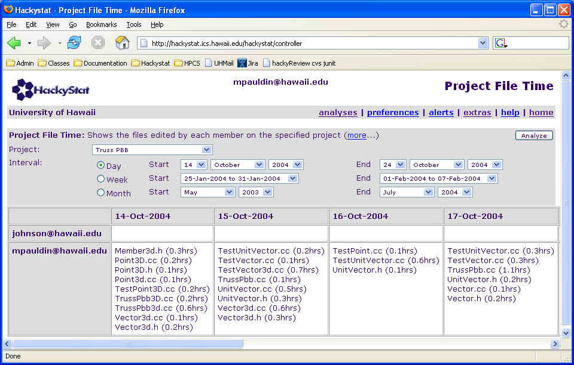
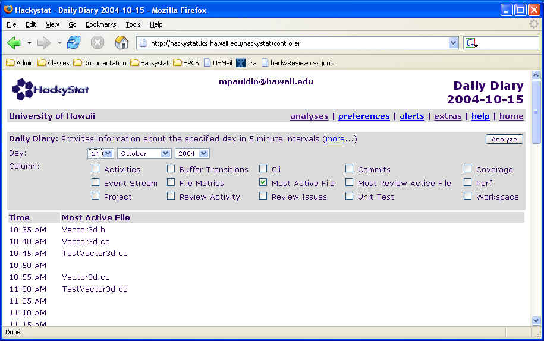
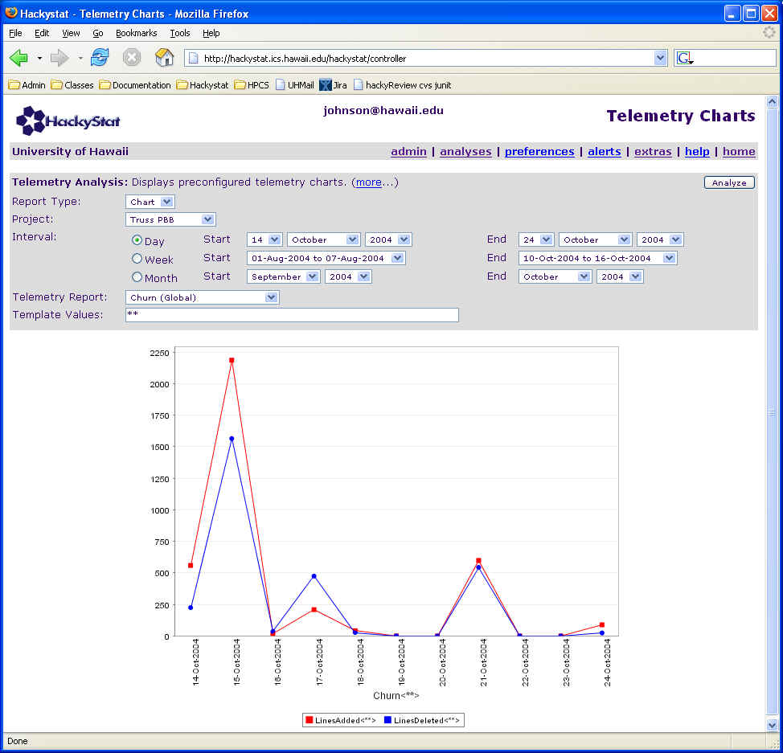
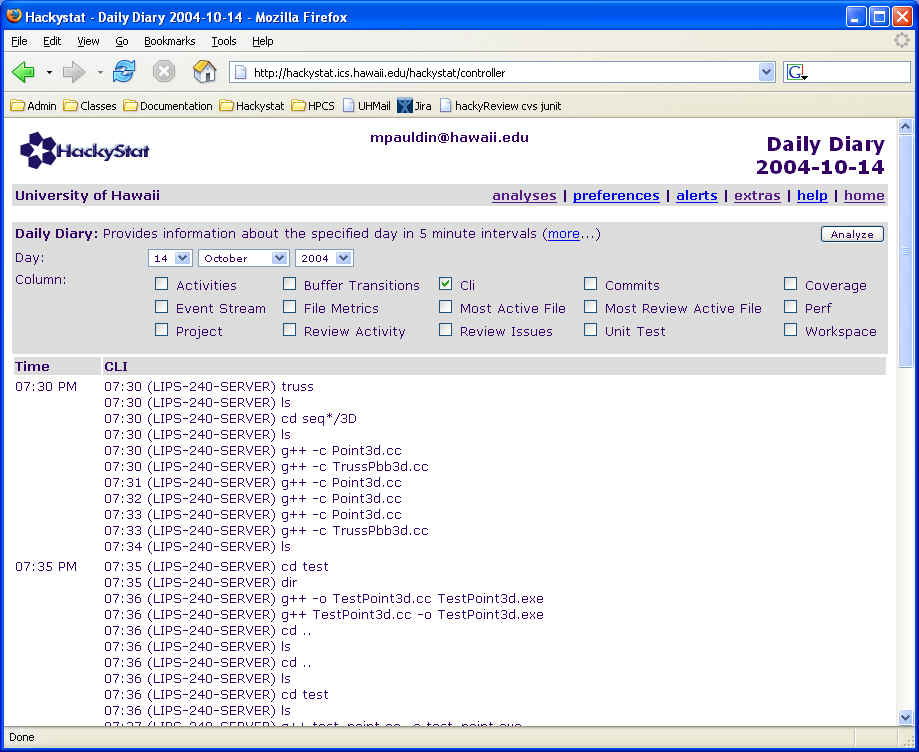
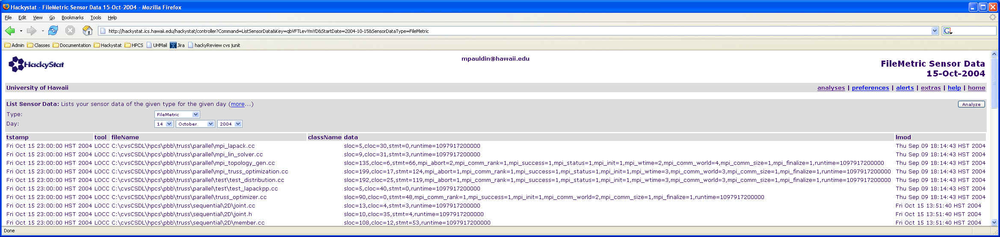

Philip Johnson
Collaborative Software Development Laboratory
Department of Information and Computer Sciences
University of Hawaii
johnson@hawaii.edu
CSDL-04-20
http://csdl.ics.hawaii.edu/techreports/04-20/04-20.html
Last update: 10/26/2004 03:38:31 PM
Abstract
Our work on measurement of HPCS product and process has so far focused on collection and analysis of Active Time, Most Active File, Code Churn, Command Line Invocations, and Parallel/Serial Lines of code. This technical report briefly overviews these measures with examples from the ongoing Truss PBB implementation project at the University of Hawaii, then proposes the collection of two additional measures to assess product functionality and performance. We discuss how these new measures could be collected, and why they are important to gaining better insight into current HPCS development practice, surfacing opportunities for HPCS development improvements, and assessing the impact of those improvements once available.
Based on our ongoing work with software engineering measurement and analysis using Hackystat, in combination with Mike Paulding's HPC research on the Truss PBB, we have so far focused on the following measurements for the Highly Productive Computing Systems project: Active Time, Most Active File, Code Churn, Command Line Invocations, and Parallel/Serial Lines of Code.
Active Time. This is a measure of the time spent by developers editing source code (or other files) related to the system. Active Time can be collected automatically through the use of sensors attached to the editor used by developers. The sensors collect active time via a timer-based process inside the editor that wakes up every 30 seconds and checks to see if the active buffer has changed in identity or size since the last 30 seconds. If so, a timestamped "statechange" event is sent to the Hackystat server. Active Time does not reflect effort spent by developers on the project that does not involve editing files, including time spent in meetings, time spent on the telephone, time spent in the shower, and so forth. Active Time may be useful in the HPC context as a proxy for overall effort.
For example, here is a chart of the cumulative Active Time associated with Mike Paulding's work on a 3D version of the Truss PBB over a period of 10 days in October, 2004:

Most Active File. A measure related to Active Time is the "Most Active File". One way to abstract the raw event stream sent from an editor-based Hackystat server begins by representing each day as a sequence of 288 five minute intervals. If a developer actively edits one or more files within a five minute period, then determine which file was edited most during that five minutes, and assign the "credit" for that five minute interval to that file and that file alone, which we call the "Most Active File". (We performed a calibration study which found this to be a reasonable abstraction.) The Most Active File abstraction may be useful in the HPC context as a way of determining what specific files were the focus of developer attention, and how that focus of attention changed over the course of development.
For example, here is a table showing the Most Active Files associated with Mike's work during the first few days of this time interval. Note that the sum of Active Time on the files for 14-Oct-2004 equals the total Active Time for that day, as shown in the prior chart:

One can drill down to an individual day and see the Most Active File for each five minute interval (if any) using the Daily Diary analysis:

For space purposes, only the first few five minute intervals of this day's work are displayed above.
Code churn. In addition to a sense for the time spent actively editing a file, it can also be useful to gain insight into the physical modifications made to source files over time. We have a sensor for the CVS configuration management tool that records information from each "commit" of local developer code to the configuration management repository. Using this data, we have implemented a software project telemetry analysis that provides a perspective on code "churn", or the number of lines added and deleted from files in the project. In an HPC environment, this can help obtain a sense for how much the underlying code base is changing based upon developer activity.
For example, here is a screen shot of code churn over all of the files in Mike's Truss PBB project from October 14 to October 24, 2004:

Code churn is an interesting measure, but must be interpreted with caution. In particular, automated support for refactoring (or simply renaming files in the case of CVS) can lead to artificially inflated values of code churn. For example, a tool like Eclipse can allow a developer to automatically rename a method and update every occurrence of that method's invocation throughout a project. That can lead to potentially hundreds of changed lines of code in just a few seconds. Thus, it is not necessarily the case that high values of code churn reflect high amounts of developer effort, or even reflect increased probabilities of defects.
Command Line Invocations. In addition to time spent editing files in an editor, HPC development frequently involves extensive use of shell processes to invoke programs such as make, gcc, etc. We have implemented a sensor for the Unix command shell (based upon the 'history' shell mechanism) to record these command line invocations. Command Line Invocation data may be useful in the HPC context as a way of providing further insight into the types of activities performed by developers during the development of the HPC code. For example, if the HPC developer spends significant time working at the command line without concurrent editing of code, then it might be useful to develop an enhanced representation of Active Time that accounts for this type of effort as well. While the current sensor only captures command invocations and not their results, it might be useful to extend the sensor to capture the results of command line invocations in certain circumstances. For example, recording whether or not a compilation succeeded or failed as well as what types of run-time errors occur could help identify potential development bottlenecks.
For example, here is a screen shot illustrating Command Line Invocation data for October 14 from Mike's work, also using the Daily Diary analysis:

Parallel and Serial Lines of Code. We have enhanced our size measurement tool, LOCC, with a token-based counter for C++ that allows us to count non-comment source lines of code, and determine for each line of code whether or not an MPI directive occurs on it. Thus, for HPC programs built using C++ and MPI, we can determine (a) the total number of files in the system, (b) the total non-commented size of each file in the system; (c) whether or not a file consists purely of serial (non-MPI) code or not; (d) for files containing MPI directives, the frequency of occurrence of each MPI directive; and (e) for files containing MPI code, what percentage of the non-comment source lines of code contained an MPI directive. We hope it will be straightforward to extend this approach to support other languages (such as Fortran) and other HPC packages (such as OpenMP). Parallel and Serial LOC measurement is useful in the HPC context by providing insight into how the code evolves during the course of development, both with respect to its overall size, as well as with respect to the kinds of parallel constructs that occur in it and their evolution.
Unfortunately, we have not yet completed the implementation of Hackystat analyses that present these parallel and serial LOC counts in chart form. We expect these analyses to become available during November, 2004. In the interim, here is a screen shot of a low level analysis in Hackystat that simply shows raw Hackystat sensor data, which provides an idea of what this data looks like in its raw form.

Unless you have an exceptionally wide monitor, you are going to need to scroll to see all parts of this screen shot.
As you can see, the raw data contains a timestamp, the tool that collected the data (LOCC), the file upon which the metrics were measured, and a "data" field containing the actual metrics values. All of the files have measures for "source" and "commented" lines of code. In addition, the files containing MPI constructs have additional metrics indicating the type of parallel construct (such as "mpi_abort") and the number of times that construct appears in the file. Files containing only "serial" lines of code do not have any reference to the parallel constructs in their data field. Interestingly, some of the files in the "parallel" directory do not contain any parallel constructs on this data. Mike says that this is because the parallelization of this code is only partially completed.
The above measures can provide useful insight into when, where, and how HPC developers are working. To more fully understand the HPC process and products such that potential improvements to the techniques and technology can be surfaced and/or evaluated, I propose that two additional measures be collected: a measure of functionality and a measure of performance.
To measure functionality, I propose that each PBB include a specification of a set of "acceptance tests". The tests would be designed to support two assessment activities: (1) to determine whether or not the PBB implementation has been "completed", and (2) to determine when significant milestones during the implementation of the system have been achieved.
The introduction of acceptance tests as a standard aspect of a PBB development activity provides several benefits. First, it enables us to gain insight into the functional goals of the development process. For example, if at the beginning of a week, 5 acceptance tests pass, and at the end of the week, 8 acceptance tests pass, we can interpret the five process and product measures listed above with respect to the increment of functionality represented by the three newly passing tests. Second, it enables us to gain insight into alternative development paths that might be taken by different developers on the same PBB. For example, one group might begin by developing a system that passes tests 1-5, and then move on to tests 6-10. Another might develop a system that initially passes tests 3-6, then move on to tests 1-2 and 7-10. It may be that the optimal path through the set of acceptance tests depends upon the underlying HPC technology.
The second proposed measure is for parallel performance. The high performance computing community has developed a broad range of standard measures to characterize parallel performance, including degree of parallelism, average parallelism, speedup, redundancy, and utilization. For our purposes, I would claim that almost any easily obtainable standard measure of parallel performance would provide huge benefits to the interpretation of the above software engineering measures, particularly when combined with acceptance tests as a measure of functionality.
Performance measures are not generally interesting as absolute numbers, since the absolute values are obviously dependent upon current hardware and other physical resources. Performance measures are interesting as relative numbers, in the sense that the way they change over time tells us whether or not and to what extent developers could tune an initial implementation to improve its performance, how the code evolved to obtain this performance increase, and whether or not functionality was sacrificed in order to do so.
With the addition of these two measures, we can now understand and assess the incremental development process from three orthogonal perspectives:
This "triangulation" of development has the potential to reveal interesting insights into the incremental process of HPCS development. For example, how do developers achieve both an acceptable level of functionality along with an acceptable level of performance? Do they do functionality first, then optimize once all functionality is implemented? Do they interleave functionality improvements with performance improvements? Does the functionality or performance ever regress---for example, does implementation of a new function cause performance to sharply degrade? What percentage of development effort is spent on functionality improvements alone, performance improvements alone, and mixtures of both functionality and performance improvements? Do these development trends change with different types of developers? Do they change based upon the underlying technology platform? If so, how?